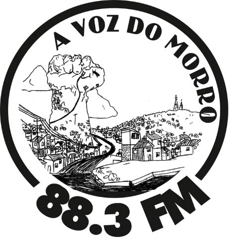

Comunicação popular em emergência climática!
Dado o atual contexto, a Rádio Comunitária A Voz do Morro 88.3 FM vai reativar suas ondas sonoras para difundir a voz dos afetados pelos eventos climáticos extremos no RS.
Dos altos do Morro Santana, buscamos construir a comunicação popular e entre, abrigos, pontos solidários e a comunidade, com compromisso de disseminar informações confiáveis, combater as fakenews e ampliar a solidariedade e apoio-mútuo entre abrigos e territórios que organizam uma vida digna em meia a destruição.
Sintoniza lá no 88.3 FM ou pela web, divulgaremos no Instagram @avozdomorro88.3 - A Voz do Morro - o povo tem voz!